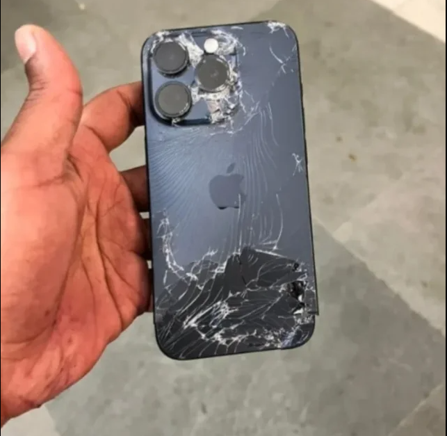
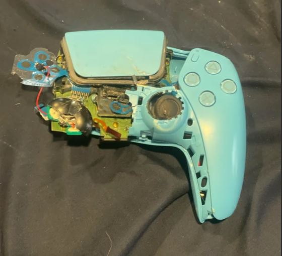
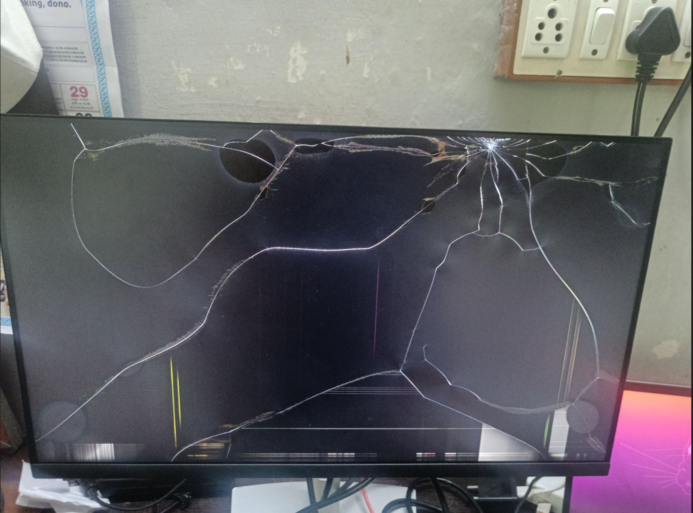

Todo es "original". No aceptamos devoluciones. Si se rompe, ya estaba así.

A primera vista, es original. La manzana de atrás es una pegatina que no se puede quitar. Tiene tres cámaras, y aunque ninguna funciona bien del todo, puedes hacer unas fotos en blanco y negro super borrosas. Puedes decir que venia así para proteger la privacidad. La batería está en perfecto estado, permitiendote hablar con tus amigos unos 30 segundos, lo suficiente para decirles que ya no te queda batería.

Experimenta la "nueva generacion" de controles con este mando súper ergonómico. Pesa sospechosamente poco, como si estuviera vacío por dentro (de ahí el nombre). Es revolucionario ya que se puede usar con una sola mano, no encontraras otro igual. El gatillo adaptativo, que se adapta a tu paciencia, se quedara atascado cuando más lo necesites. Además, tiene un sistema "Drift" Pro, tu personaje caminará automáticamente hacia los barrancos sin que tu toques nada. Es casi manos libres.

Ideal para gente que odia ver bien. Alta definicion (de problemas). Era plano, pero tras una modificacion (o accidente) ahora se puede apreciar que realmente es curvo. No tiene píxeles muertos, solo descansando para el ahorro de energía. Ademas incluye un filtro y solo muestra gamas de verde y rosa. Tus películas favoritas parecerán de los años 80.